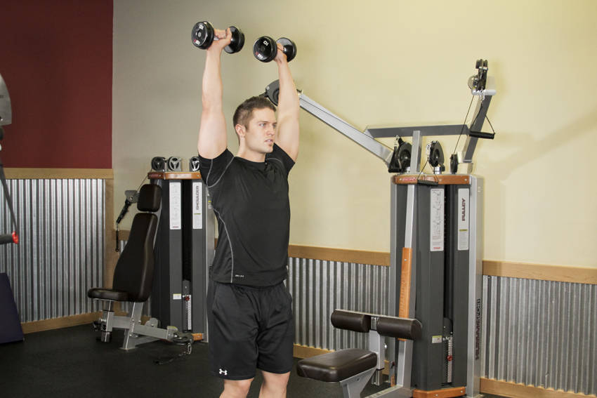

- Standing with your feet shoulder width apart, take a dumbbell in each hand. Raise the dumbbells to head height, the elbows out and about 90 degrees. This will be your starting position.
- Maintaining strict technique with no leg drive or leaning back, extend through the elbow to raise the weights together directly above your head.
- Pause, and slowly return the weight to the starting position.